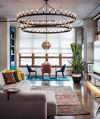

Quiver
A quiver can be used for storing projectiles, such as arrows.

Famous archers, such as Robin Hood, need quivers.
Tub
The word "tub" has two different noun-definitions:
- 1) a wide, open, deep, typically round container with a flat bottom used for holding liquids, growing plants, etc.
- 2) an old, awkward, or run-down vessel.
Design
A "design" can be thought of as a plan for the decoration or structure of something.
